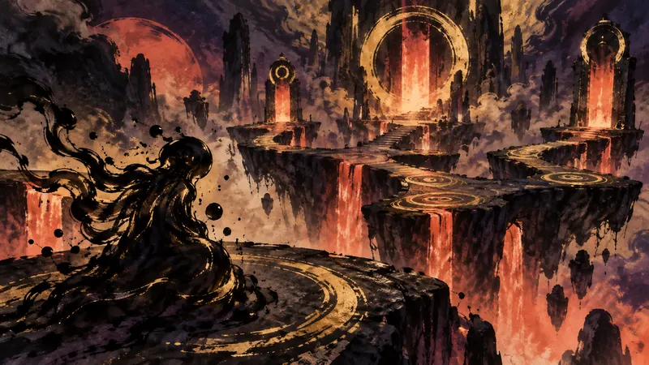
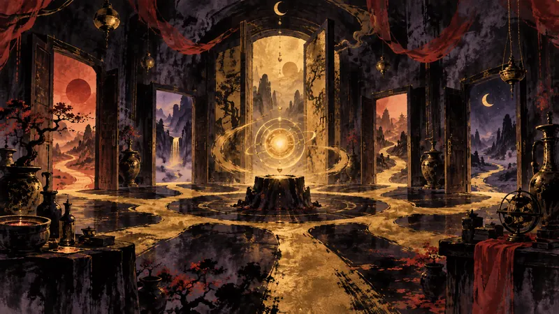
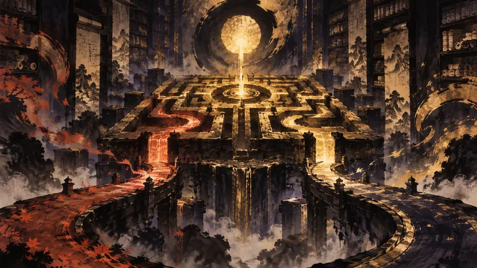
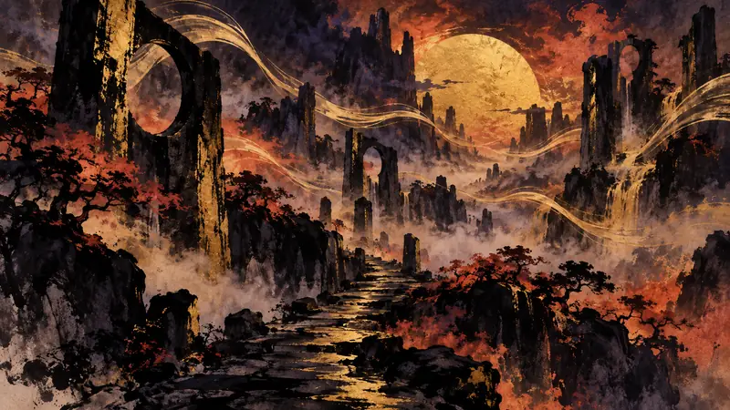
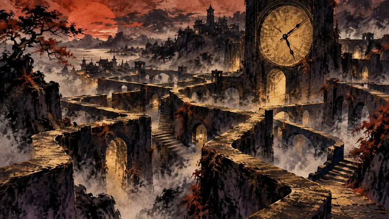
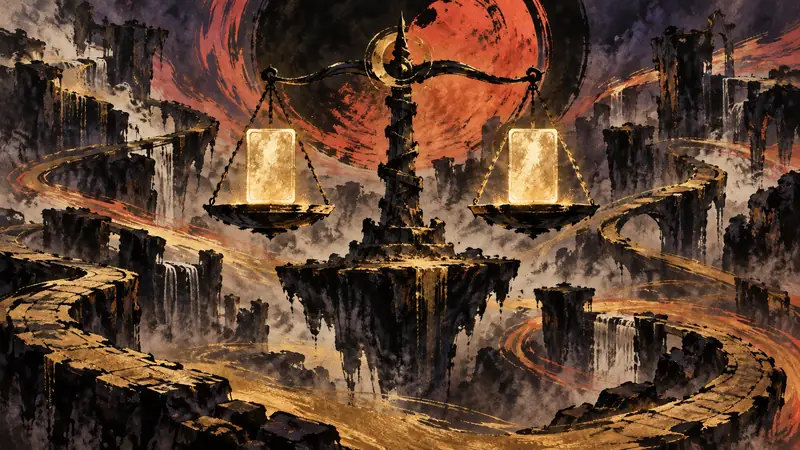
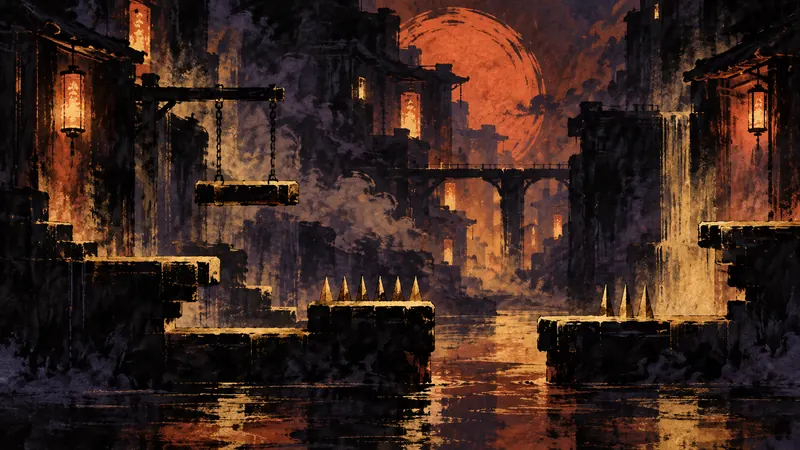
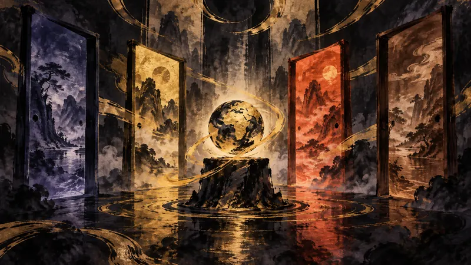
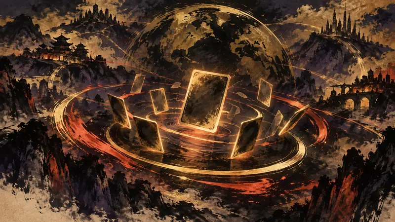

巴哈姆特 GNN

【TGS 26】《七龍珠 異戰 3》TGS 現場一手試玩影片公開 前往未來新世界 成為自己期望的英雄！
2027年才會上市的《七龍珠 異戰3》，先在TGS 2026把漫畫IP的熟悉感交給玩家用實際操作驗證；這次試玩成了等待期裡最具體的判斷入口。
觀點：現場試玩把期待從宣傳畫面拉回操作感，對想先確認是否適合自己的玩家更有用。
先鴉｜黎明快訊
玩家能動性：政策如何限制它、產業如何形塑它、敘事設計如何實現它。
最新消息
第一線
巴哈姆特 GNN

2027年才會上市的《七龍珠 異戰3》，先在TGS 2026把漫畫IP的熟悉感交給玩家用實際操作驗證；這次試玩成了等待期裡最具體的判斷入口。
觀點：現場試玩把期待從宣傳畫面拉回操作感，對想先確認是否適合自己的玩家更有用。
巴哈姆特 GNN

這次TGS試玩把小說裡需要閱讀追索的謎團交給玩家操作，改編能否留住詛咒感，先從互動開始接受檢驗，也讓玩家先看見它如何還原原作氣氛。
觀點：改編作的吸引力，在於熟悉的角色多了一個遊玩入口；但熟悉感也會拉高你對敘事與角色還原的期待。
4Gamer.net

距離2027年1月發售還有一段時間，TGS先讓《Fate/EXTRA Record》的新版系統與原作記憶放到同一個比較框架裡，重製差異也從操作開始變得可感。
觀點：重製版很容易讓玩家卡在「我記得的那款」與「現在想玩的這款」之間，兩種期待都合理。
Oyun Gunlugu（土耳其，土耳其語）
第21季同時把玩家拉進限時海盜活動，也讓Custom Seas能保存世界狀態；回鍋理由與長期便利性一起到位，節奏卻不相同。
觀點：賽季內容給玩家一個「現在回來玩」的理由，也會把時間切成一段段需要跟上的期限。
인벤 Inven（韓國，韓語）
卡莉亞會因為吃下物品而改變外觀與能力，這個奇想不只改造主角，也要和調合、料理與探索互相咬合，成為本作最鮮明的核心看點之一。
觀點：系列作的熟悉框架，會替玩家保留一條可預期的進場路徑；失憶與地下世界則提供新的探索理由。
인벤 Inven（韓國，韓語）

從Project RX到《Paréidolia》，正式名稱只是第一步；真正吊起期待的，是舒適日常與神秘異世界能否由玩法和音樂同時成立。
觀點：從代號換成正式名稱，玩家更容易把零散情報整理成一個可期待的作品，等待也更容易受宣傳節奏牽動。
인벤 Inven（韓國，韓語）

《Persona 4 Revival》把稻葉做成可自由轉鏡的3D小鎮，卻刻意保留原作的暖度；重製的難題因此不在變新，而在不變味。
觀點：重製版把「記得原作」與「現在願意再玩一次」拆成兩個問題；老玩家想保留的氣氛，未必等於新玩家需要的操作節奏。
GamingOnPhone（印度，英語）

2.2.20版先在先行服同時動到英雄與戰場，Lunox、Xavier的強化會如何改變對戰節奏，值得提前觀察，也讓版本方向更早浮現。
觀點：先行服讓玩家能提早參與平衡觀察，代價是投入的時間可能用在一個仍會改變的版本上。
第一線
Oyun Gunlugu（土耳其，土耳其語）

Rick、Daryl、Michonne與Negan不只在影集裡並肩或對峙，這次要由玩家用四種角色選擇闖過12章像素街機戰鬥。
觀點：復古外觀與街機式打鬥，讓人很快判斷自己想不想試；對時間有限的玩家來說，這種清楚的入口反而友善。
4Gamers Thailand（泰國，泰語）

免費泰文模組把《Urban Myth Dissolution Center》的詛咒謎案帶進另一個語言入口，卻也讓玩家面對非官方翻譯與更新維護的取捨。
觀點：免費語言模組把理解故事的門檻交回玩家社群，對不熟原語言的人來說是實際選項。
GamingOnPhone（印度，英語）

只有9月17日至24日的測試窗口，讓《OVER RUSH》的高速卡牌戰鬥必須在一週內說服想嘗鮮的玩家，也把判斷期限壓到最短。
觀點：一週測試降低了嘗鮮門檻，卻也把判斷期限壓得很緊；想玩的玩家不必把參與視為長期承諾。